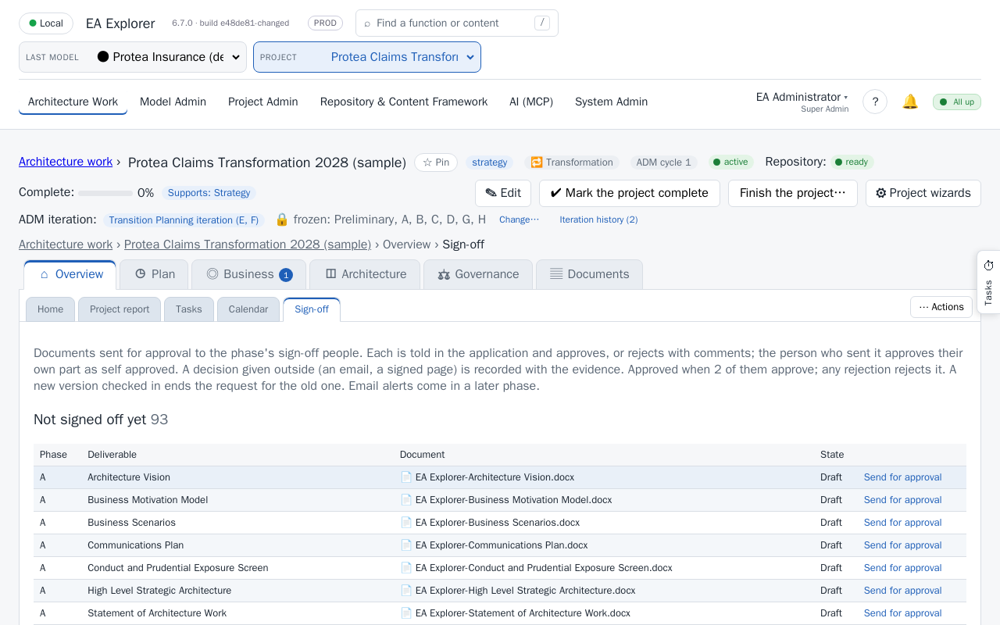

Approve or reject a deliverable
For: Executives, Practising architects, Project Admin
Your sign-off on a deliverable you were asked to approve.

#/projects/{p}/signoffWhy do this
Sign-off is how a project shows the right people agreed to what it produced. Each deliverable has its sign-off people and how many must approve. Your decision, with any comment, is kept with the version you approved, so the record shows exactly what was agreed. See Governance and sign-off.
A project carries one pass of the ADM from vision to sign-off. Each task here is one of the steps along that route, and the project keeps them together so the whole story can be read later.
In TOGAF terms: Architecture governance: approval of deliverables. See EA Explorer and the TOGAF Standard.
The goal: Your sign-off is recorded on the deliverable, with the date.
Before you start You are one of the deliverable's sign-off people.
Steps
- Open the link you were sent, or the project's Sign-off tab.
- Open the document and read it; check what it needs (how many must approve, who has).
- Approve, or Reject saying why.